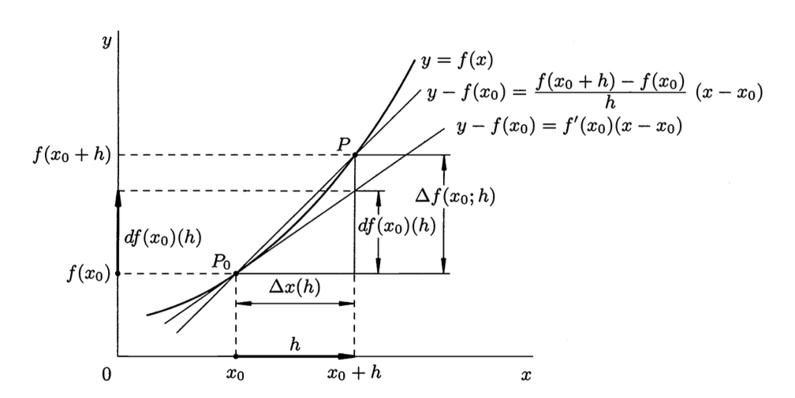
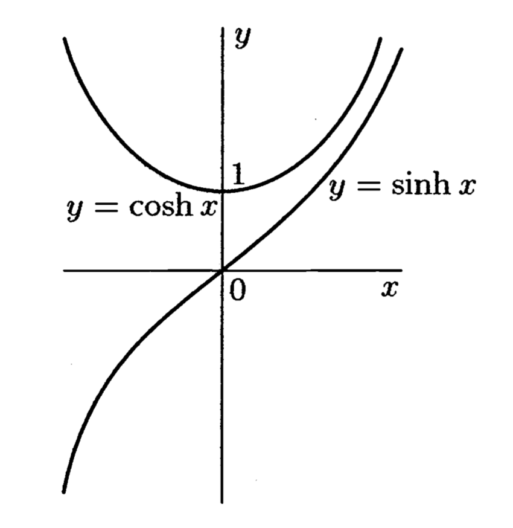
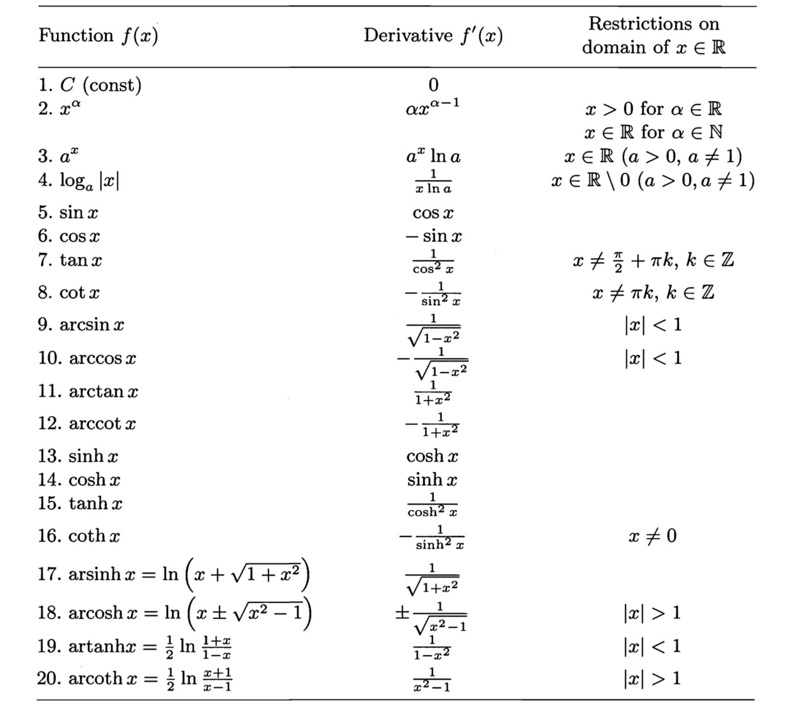

1. Derivative
1.1. Differentiable Functions
Definition 1.1 A function defined on a set is differentiable at a point that is a limit point of , if there exists a linear function of the increment of the argument such that can be represented as \begin{equation} f(x) - f(a) = A(x-a) + \circ(x-a) \text{ as } x \to a, a \in E {\tag 1} \label{eq:eq1} \end{equation}
In other words, a function is differentiable at a point if the change in its values in a neighborhood of the point in question is linear up to a correction that is infinitesimal compared with the magnitude of the displacement for the point .
Definition 1.2 The linear function in \eqref{eq:eq1} is called the differential of the function at . The number is unambiguously determined due to the uniqueness of the limit.
Definition 1.3 The number \begin{equation} f'(a) = \lim_{x \to a} \frac{f(x)-f(a)}{x-a} {\tag 2} \label{eq:eq2} \end{equation} is called the derivative of the function at .
Relation \eqref{eq:eq2} can be rewritten in the equivalent form \begin{equation} \frac{f(x) - f(a)}{x - a} = f'(a) + \alpha(x) \end{equation} where \begin{equation} \alpha(x) \to 0 \quad {\rm{as}}\quad x \to a, x \in E \end{equation} which is equivalent to \begin{equation} f(x) - f(a) = f'(a)(x-a) + o(x-a) {\quad\rm{as}\quad} x \to a, x \in E \end{equation}
Graphically, this definition says that the derivative of at is the slope of the tangent line to at , which is the limit as of the slopes of the lines through and .
We can also write \begin{equation} f'(a) = \lim_{\Delta x \to 0} \frac{f(a+\Delta x) - f(a)}{\Delta x} \end{equation}
Definition 1.4 A function defined on a set is differentiable at a point that is a limit point of , if \begin{equation} f(x+h) - f(x) = A(x)h + \alpha(x;h){\tag 3} \label{eq:eq3} \end{equation} where is a linear function in and as .
Definition 1.5 The function of Definition \eqref{eq:eq3} , which is linear in , is called the differential of the function at the point and is denoted as or . Thus,
From definitions \eqref{eq:eq2} and \eqref{eq:eq3} we have \begin{equation} \Delta f(x;h) - df(x)(h) = \alpha(x;h) \end{equation}
1.2. The Tangent line, Geometric Meaning of the Derivative and Differential
If we were seeking a polynomial \begin{equation} P_n(x) = c_0 + c_1(x - x_0) + \cdots + c_n(x - x_0)^n + o((x - x_0)^n) \end{equation} such that \begin{equation} f(x) = c_0 + c_1(x - x_0) + \cdots + c_n(x - x_0)^n + o((x - x_0)^n) \end{equation} as
We could find successively,
Proposition 1 A function $f: E \to \mathbb{R}$ that is continuous at a point $x_0 \in E$ that is a limit of $E \subset \mathbb{R}$ admits a linear approximation if and only if it is differentiable at the point.
Definition If a function $f:E \to \mathbb{R}$ is defined on a set $E \subset \mathbb{R}$ and differentiable at a point $x \in E$, the line defined by is called the tangent to the graph of this function at the point $(x_0, f(x_0))$.

1.2.1. Some Examples
Example 1 Let $f(x) = \sin x$. We shall show that $f'(x) = \cos x$.
Example 2 We shall show that $\cos'(x) = - \sin x$.
Example 3 If $f(t) = r\sin \omega t$, then $f'(t) = r\omega \cos \omega t.$ If $f(t) = r\cos \omega t$, then $f'(t) = -r\omega \sin \omega t.$
Example 4 The instantaneous velocity and instantaneous acceleration of a point mass. Suppose a point mass is moving in a plane and that in some given coordinate system its motion is described by differentiable function of time In particular, this motion is written as in the form Example 5 The optic property of a parabolic mirror. Let us consider the parabola $y = \frac{1}{2p}x^2(p>0)$, and construct the tangent to it at the point $(x_0, y_0) = (x_0, \frac{1}{2p}x_0^2)$.
Example 6
Example 7 We shall show that . Example 8 If $a > 0$, then $a^{x+h} - a^x = a^h(\ln a)h + \circ(h)$ as $h \to 0.$
1.2.2. 作業
- 設$\displaystyle f(x) = \left{\begin{array}{cc}x^2, & x \ge 3 \newline ax+b, & x < 3 \end{array}\right.$試確定$a,b$的值，使$f$在$x=3$處可導。
- 求下列曲線在指定點處的切線，法線方程。（1） $\displaystyle y = \frac{x^2}{4}, P(2,1)$ (2) $\displaystyle y = \cos x, P(0,1)$
- 求下列函數的導數：(1)$\displaystyle f(x) = |x|^3$, (2) $\displaystyle f(x) = \left{\begin{array}{cc} x+1, & x \ge 0 \newline 1, & x < 0 \end{array}\right.$
- 設函數試問：（1）$\alpha$為何值時，函數在$x=0$點連續；（2）$\alpha$為何值時，函數在$x=0$點可導.
1.3. $\S$ 5.2 The Basic Rules of Differentiation
1.3.1. 5.2.1 Differentiation and the Arithmetic Operations
Theorem 1 If function $f: X \to \mathbb{R}$ and $g: X \to \mathbb{R}$ are differentiable at a point $x \in X$, then
(1) their sum is differentiable at $x$, and (2) their product is differentiable at $x$, and (3) their quotient is differentiable at $x$ if $g(x) \ne 0$, and
Corollary 1.1 The derivative of a linear combination of differentiable functions equals the same linear combination of the derivatives of these functions.
Corollary 1.2 If the functions $f_1, \cdots, f_n$ are differentiable at $x$, then
Corollary 1.3 It follows from the relation between the derivative and the differential that we have:
Example 1 Find the derivative of $\displaystyle \tan x$ and $\cot x$.
1.3.2. 5.2.2 Differentiation of a Composite Function (chain rule)
Theorem 2 If the function: $f: X \to Y \subset \mathbb{R}$ is differentiable at a point $x \in X$ and the function $g: Y \to \mathbb{R}$ is differentiable at the point $y = f(x) \in Y$, then the composite function $g \circ f: X \to \mathbb{R}$ is differentiable at $x$, and the differential $\rm{d} (g \circ f)(x): T\mathbb{R} \to T\mathbb{R}g(f(x))$ of their composition equals the composition $\rm{d}g(y) \circ \rm{d}f(x)$ of their differentials.
Corollary 2.1 The derivative $(g \circ f)'(x)$ of the composition of differentiable real-valued functions equals the product $g'(f(x)) \cdot f'(x)$ of the derivatives of these functions computed at the corresponding points. \begin{equation} \frac{\Delta z}{\Delta x} = \frac{\Delta z}{\Delta y} \cdot \frac{\Delta y}{\Delta x} \end{equation}
Example 2 Let us show that for $\alpha \in \mathbb{R}$ we have $\frac{\mathrm{d}x^{\alpha}}{\mathrm{d}x} = \alpha x^{\alpha -1}$ in the domain $x > 0$, that is, $\mathrm{d} x^{\alpha} = \alpha x^{\alpha - 1}\mathrm{d}x$
Example 3 The derivative of the logarithm of the absolute value of a differentiable function is often called its logarithmic derivative. \begin{equation} \mathrm{d}\left(\ln |f|\right)(x) = \frac{f'(x)}{f(x)} \mathrm{d}x = \frac{\mathrm{d}f(x)}{f(x)}. \end{equation}
Example 4 The absolute and relative errors in the value of a differentiable function caused by errors in the data for the argument. \begin{equation} f(x+h) - f(x) = f'(x)h + \alpha(x;h), \end{equation} \begin{equation} \frac{|f'(x)h|}{|f(x)|} = \frac{|\mathrm{d}f(x)h|}{|f(x)|} \end{equation}
1.3.3. 5.2.3 Differentiation of an Inverse Function
Theorem 3 Let the function $f: X \to Y$ and $f^{-1}: Y \to X$ be mutually inverse and continuous at points $x_0$ and $f(x_0) = y_0 \in Y$ respectively. If $f$ is differentiable at $x_0$ and $f'(x_0) \ne 0$, then $f^{-1}$ is also differentiable at the point $y_0$, and
Remark If we knew in advance that the function $f^{-1}$ was differentiable at $y_0$, we would find immediately by the identity $\left(f^{-1} \circ f\right)(x) = x$ and the theorem on differentiation of a composite function that $\left(f^{-1}\right)'\cdot f'(x_0) = 1.$
Remark The condition $f'(x_0) \ne 0$ is obviously equivalent to the statement that the mapping $h \to f'(x_0)h$ realized by the differential $\mathrm{d}f(x_0):T\mathbb{R}(x_0) \to T\mathbb{R}(y_0)$ is invertible mapping $\left[\mathrm{d}f(x_0)\right]^{-1}: T\mathbb{R}(y_0)\to T\mathbb{R}(x_0)$ given by the formula $ \tau \to \left(f'(x_0)\right)^{-1}\tau$.
Example 5 We shall show that $\arcsin'y = \frac{1}{1-y^2}$ for $|y| < 1$.
Example 6 $\displaystyle arccot'y = -\frac{1}{1+y^2}, \arctan'y = \frac{1}{1+y^2}$
Example 7 The hyperbolic and inverse hyperbolic functions and their derivatives. The function are respectively the hyperbolic sine and hyperbolic cosine of $x$. These functions, which for the time being have been introduced purely formally, arise just as naturally in many problems as the circular functions $\sin x$ and $\cos x$. We remark that Moreover, the following basic identity is obvious The graphs of the functions $y = \sinh x$ and $y = \cosh x$ are shown in  The inverse of the hyperbolic sine is Thus, Similarly, using the monotonicity of the function $y = \cosh x$ on its definition, we have From the definitions given above, we find and by the theorem on the derivative of an inverse function, we find Like $\tan x$ and $\cot x$ one can consider the functions called the hyperbolic tangent and hyperbolic cotangent respectively, and also the functions inverse to them, the area tangent By the rules for differentiation we have
1.3.4. 5.3 Table of Derivatives of the Basic Elementary Functions

1.3.5. 5.4 Higher-order Drivative
If a function $f: E \to \mathbb{R}$ is differentiable at every point $x \in E$, then a new function $f': E \to \mathbb{R}$ arises, whose value at a point $x \in E$ equals the derivative $f'(x)$ of the function $f$ at that point. The function $f': E \to \mathbb{R}$ may itself has a derivative